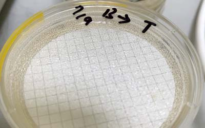
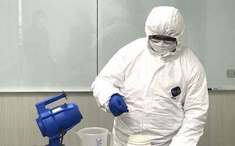
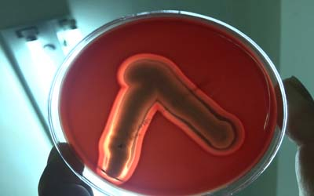

病菌消毒概念
 細菌病毒消毒,是一手段,然而在前期之防護作業更能降低感染率,我們人類無法消滅所有病毒,只能讓其危害降至最低,這不光只是消毒,而是預防,讓其生存環境,媒介減少.更能降低其感染
細菌病毒消毒,是一手段,然而在前期之防護作業更能降低感染率,我們人類無法消滅所有病毒,只能讓其危害降至最低,這不光只是消毒,而是預防,讓其生存環境,媒介減少.更能降低其感染

|
■ (1) 好氧性革蘭氏陽性菌
1-a: Staphylococcus aureus (金黃色葡萄球菌) 1-b: Staphylococcus epidermidis (表皮葡萄球菌) 1-c: Enterococcus spp (腸球菌屬) |
| ■ (2) 需氧性革蘭氏陰菌
2-a: Escherichia coli (大腸菌) 2-b: Klebsilla spp (克雷伯氏菌屬) 2-c: Serratia marcescens (粘質沙雷氏菌) 2-d: Proteus spp (變形桿菌) 2-e: Enterobacter cloacae (腸桿菌屬) 2-f: Pseudomonas aeruginosa (綠膿桿菌) 2-g: Burkkqlderia cepacia (伯克氏菌屬) 2-h: Chryseobacterium meningosepticum (腦膜膿毒性金黃桿菌 2-i: Stenotrophomonas odoratum (嗜麥芽窄食單胞菌) 2-j: Acinetobacter calcoaceticus (乙酸鈣不動桿菌) 2-k: Legionella pneumophila (嗜肺軍團菌) 2-l: Salmonella spp (沙門氏菌) 2-m: Shigella spp (赤痢菌屬) 2-n: Campylobacter jejuni (空腸曲桿菌) 2-o: Vibrio parahaemolyticus (副溶血弧菌) |

(3) 厭氧性菌 3-a: Clostridium difficile (艱難梭菌) |
(4) Mycobacterium tuberculosis (結核菌) 它是需氧微生物,大部份由空氣傳染,但也有約10%是發生肺以外組織的感染，其中以皮膚軟組織為主。 |
(5) Treponema pallidum (梅毒) |
| (6) 真菌 6-a: Cryptococcus neoformans (新型隱球菌) 6-b: Aspergillus fumigatus (煙麴黴 ) 6-c: Candida albicans (念珠菌症) 6-d: Mucor (毛黴屬) |

|
(7) 病毒
|
| (8) 壁蝨、蜱、蟎、螕 |
 細菌病毒消毒,是一手段,然而在前期之防護作業更能降低感染率,我們人類無法消滅所有病毒,只能讓其危害降至最低,這不光只是消毒,而是預防,讓其生存環境,媒介減少.更能降低其感染
細菌病毒消毒,是一手段,然而在前期之防護作業更能降低感染率,我們人類無法消滅所有病毒,只能讓其危害降至最低,這不光只是消毒,而是預防,讓其生存環境,媒介減少.更能降低其感染